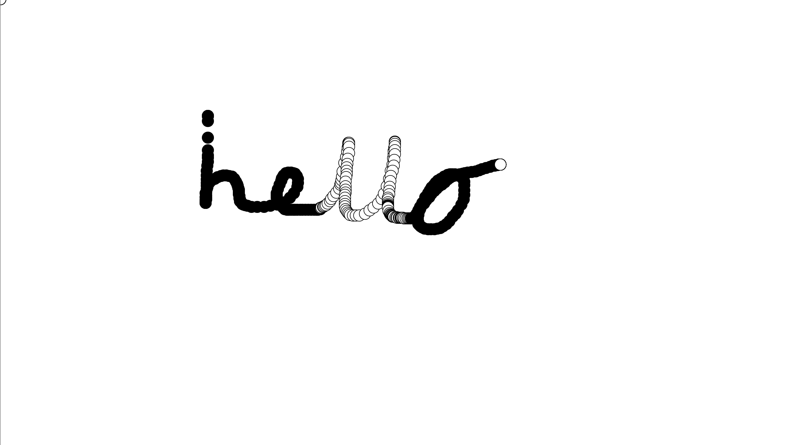

OliDraw
This project is currently not under development
View project here: Olidraw
This project has been active for
Active on computer? Yes
Active on mobile? Yes, cannot use all features though
Fun Facts:
- I made this project when I was 8 with my Dad!
- It is a cool website where you can draw anything!
This is how it works:
- Move your cursor to begin drawing. It will draw circles that follow your cursor with black outlines.
- Click + hold + move your cursor to draw with black circles.
- Command + R to start drawing again. (This refreshes the page)
Here is an image:
